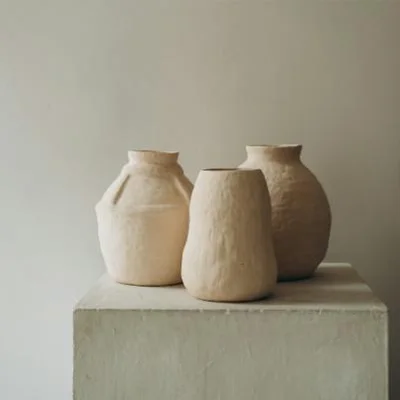
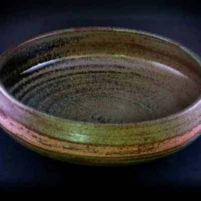
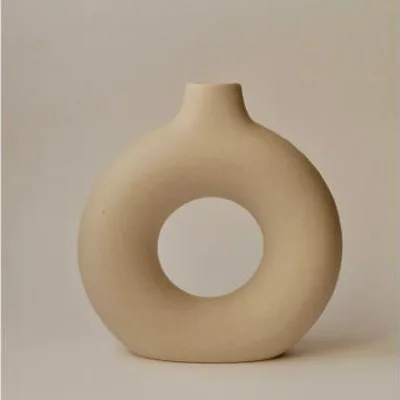

Par de vasijas$186.000
Barro rojo · sin esmalteCuencos, platos y jarrones torneados uno por uno en nuestro taller de La Calera. Cada pieza sale del horno distinta a la anterior.

Cuenco Nº 07 — Gres esmaltado — Ø 18 cm

Preparamos el barro a mano para sacarle el aire.
Cada pieza se levanta en el torno, sin moldes.
Esmaltes propios hechos con ceniza de leña.
Dos quemas, la última a 1.280 grados.